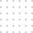

Stowarzyszenie
Sądecki Elektryk

SOMETHING INFORMATIONS
ABOUT US
To stowarzyszenie założone przez nauczycieli, by wspierać szkołę oraz młodzież przez organizowanie
imprez,
wydarzeń oraz realizację projektów dzięki którym młodzież mogłaby rozwijać swoje pasje i
zainteresowania.
To grupa ludzi gotowych pomagać i wspierać.
Stowarzyszenie Sądecki Elektryk w 2017 roku otrzymało tytuł Laureata Grand Prix Nagrody Marszałka
Województwa Małopolskiego
"Kryształy Soli" w kategorii "edukacja i nauka". Zostało ono nagrodzone m.in za niekonwencjonalne
podejście do popularyzacji nauki wśród młodych oraz kreowanie odpowiednich postaw społecznych.

ON THIS PAGE YOU CAN SEE
OUR PROJECTS
DONE
asdfasfasd
asdfasfasd
asdfasfasd
asdfasfasd
asdfasfasd
asdfasfasd
asdfasfasd
WILL BE DONE
asdfasfasd
asdfasfasd
asdfasfasd
asdfasfasd
asdfasfasd
asdfasfasd
asdfasfasd
on this page you can
support us
or
Drugim sposobem jest po prostu przekazanie darowizny na rzecz
stowarzyszenia. Darowizny można przekazywać na konto:
Bank BGŻ BNP Paribas S.A
98 2030 0045 1110 0000 0387 2230
98 2030 0045 1110 0000 0387 2230
Contact to us:
Contact to creater website:
Nikodem Kusiak All Copyright @ 2022